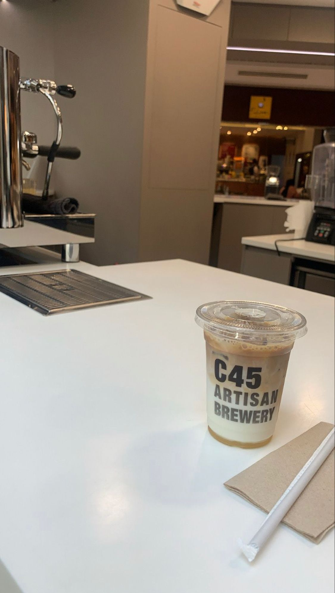

COFFEE
Brief about Coffee
Coffee has a dark brown to black color, a bitter and slightly sour flavor, and a stimulating effect on individuals due to the caffeine content. It is one of the most popular beverages in the world, and it may be brewed and served in a variety of ways. Coffee can be served fresh when you grind the beans and brew it at the same time.
Taste of Coffee
Coffee flavors inclugde flowery, herby, smokey, nutty, and others. Acidity, bitterness, sweetness, saltiness, and sourness are some flavor descriptions. Coffee has many tastes, you can change your coffee taste by adding flavours. Everybody can be creative while making coffee, adding syrups and different types of milk. It's on the person which flavour and if the person loves to drink it hot or cold.
